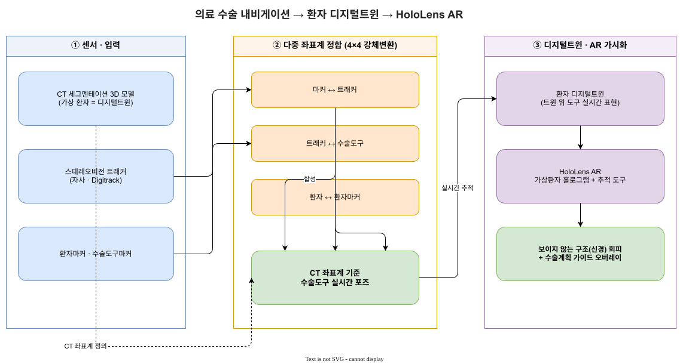

3D SPATIAL COMPUTING · RESEARCH ENGINEER
불확실한 3D 공간을, 검증 가능한 시스템으로.
좌표 정합, 센서 인지, XR, 디지털 트윈을 넘나들며 문제 정의부터 통합·검증까지 직접 책임지는 hands-on technical-lead IC입니다.
EVIDENCE REGISTRATION · 공개 가능한 근거
결정이 시스템에 닿은 흔적.
05 TRANSFERABLE CAPABILITIES
반복해서 해결해 온 문제.
JavaScript가 역량 지도를 표시합니다. 역량 요약을 읽거나 또는 프로젝트 사례를 살펴보세요.
OUTCOME EVIDENCE
결과로 남은 변화.
사람의 검토를 전제로 AI 지원 구현을 적용한 유사 센서 검증 도구의 예상 개발 기간
LiteSim으로 현장 전 검증을 수행한 뒤의 일반적인 출장 빈도
주 시스템 통합 전 핵심 기능을 선별한 HoloLens SDK 탐색
DECISION LOOP · 01—03
먼저 정의하고, 작게 검증하고, 시스템으로 연결합니다.
도메인을 번역합니다
임상·로봇·센싱 제약을 좌표 정의, 테스트 시나리오, 수용 기준으로 바꿉니다.
확정하기 전에 탐색합니다
방향 전환 비용이 낮을 때 작은 병렬 PoC로 SDK, 센서, 통합 위험을 드러냅니다.
검증된 것을 통합합니다
AI로 구현 처리량을 높이되 요구사항, 시스템 결정, 검토 게이트, merge 품질은 사람이 책임집니다.
CONTACT · SENIOR R&D
함께 검증할 어려운 공간 문제가 있나요?
3D 정합, 센서 검증, 디지털 트윈, 임상 XR을 연결하는 hands-on technical-lead IC 역할을 찾고 있습니다.